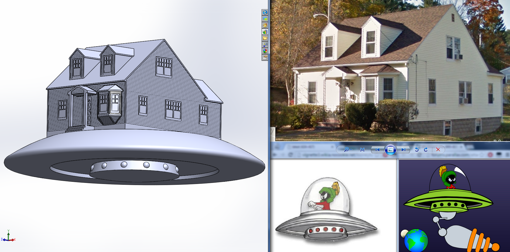

The Mothership
Inception
After her husband passed away, my great aunt moved in with her identical twin sister, my grandmother, and my mother.
At that point, with three grandmothers all living in the same home, our family took to calling the house itself, "The Mothership."
These three little old ladies all love spoiling their young grandchildren and grandnephews, and the house quickly became riddled with toys.
I wanted to add my own contribution to the kids' growing collection by making a toy inspired by the house itself.
Concept
A model of a the family home, scaled to the size of toy appropriate for young children. The house itself would mate with a model of a flying saucer by virtue of interlocking features copied from Mega Bloks (TM). The boys had a ton of Mega Bloks already, and I thought it would be neat if they could take apart my toy and incorporate its pieces into constructions of their own.
Tools
|
Materials
|
Method
Below you'll see a side-by-side of the final CAD model and some of the source images.
At the top of this page is a picture of the final, 3D printed product, in the hands of its intended owner, my oldest nephew, just after his third birthday.